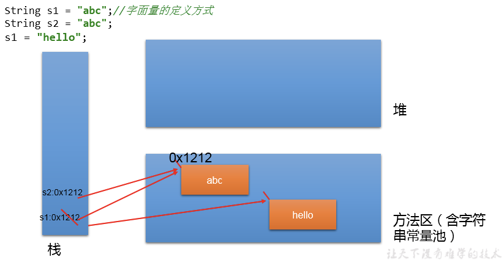
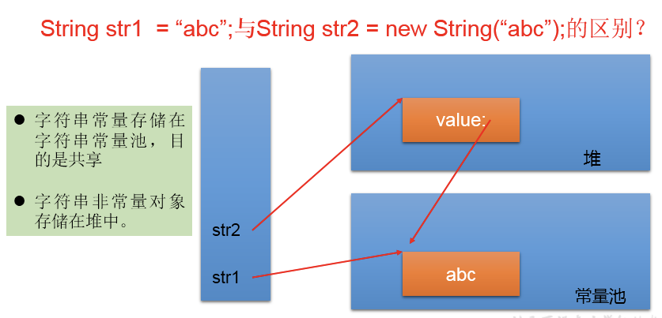
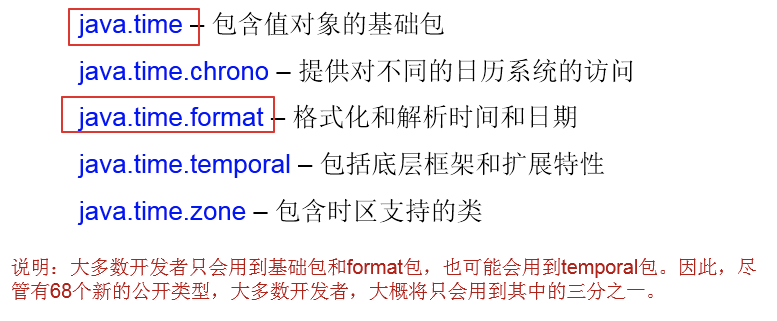
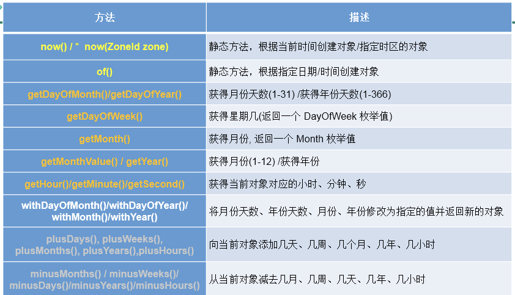
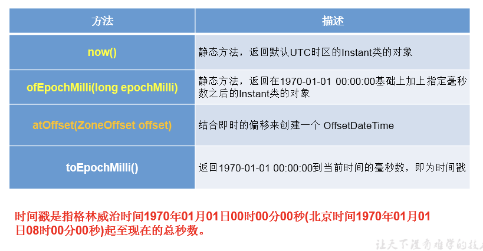
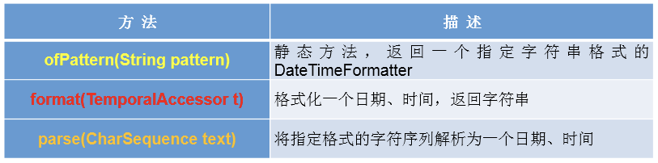
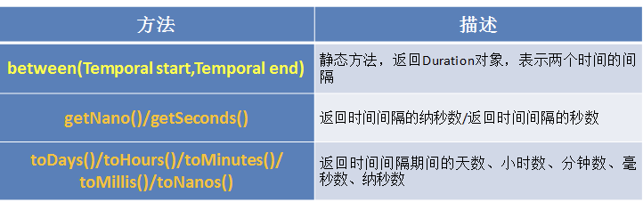
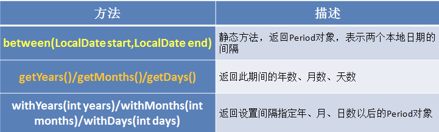
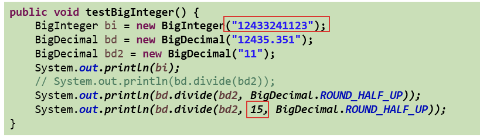

1 String类
String：字符串，使用一对””引起来表示。
- String声明为final的，不可被继承。
- String实现了Serializable接口：表示字符串是支持序列化的。
- String实现了Comparable接口：表示String可以比较大小。
- String内部定义了final char[] value用于存储字符串数据。
- 通过字面量的方式（区别于new）给一个字符串赋值，此时的字符串值声明在字符串常量池中)。
- 字符串常量池中是不会存储相同内容（使用String类的equals()比较，返回true）的字符串的。
1.1 String的不可变性
- 当对字符串重新赋值时，需要重写指定内存区域赋值，不能使用原有的value进行赋值。
- 当对现的字符串进行连接操作时，也需要重新指定内存区域赋值，不能使用原有的value进行赋值。
- 当调用String的replace()方法修改指定字符或字符串时，也需要重新指定内存区域赋值，不能使用原有的value进行赋值。
String s1 = "abc";//字面量的定义方式
String s2 = "abc";
s1 = "hello";
System.out.println(s1 == s2);//比较s1和s2的地址值
System.out.println(s1);//hello
System.out.println(s2);//abc
System.out.println("*****************");
String s3 = "abc";
s3 += "def";
System.out.println(s3);//abcdef
System.out.println(s2);
System.out.println("*****************");
String s4 = "abc";
String s5 = s4.replace('a', 'm');
System.out.println(s4);//abc
System.out.println(s5);//mbc
1.2 String实例化的不同方式
方式一：通过字面量定义的方式
方式二：通过new + 构造器的方式
//通过字面量定义的方式：此时的s1和s2的数据javaEE声明在方法区中的字符串常量池中。
String s1 = "javaEE";
String s2 = "javaEE";
//通过new + 构造器的方式:此时的s3和s4保存的地址值，是数据在堆空间中开辟空间以后对应的地址值。
String s3 = new String("javaEE");
String s4 = new String("javaEE");
System.out.println(s1 == s2);//true
System.out.println(s1 == s3);//false
System.out.println(s1 == s4);//false
System.out.println(s3 == s4);//false面试题：String s = new String("abc");方式创建对象，在内存中创建了几个对象？
- 两个，一个是堆空间中new结构，另一个是char[]对应的常量池中的数据：”abc”

1.3 String拼接方式赋值的对比
- 常量与常量的拼接结果在常量池。且常量池中不会存在相同内容的常量。
- 只要其中一个是变量，结果就在堆中。
- 如果拼接的结果调用intern()方法，返回值就在常量池中
String s1 = "javaEE";
String s2 = "hadoop";
String s3 = "javaEEhadoop";
String s4 = "javaEE" + "hadoop";
String s5 = s1 + "hadoop";
String s6 = "javaEE" + s2;
String s7 = s1 + s2;
System.out.println(s3 == s4);//true
System.out.println(s3 == s5);//false
System.out.println(s3 == s6);//false
System.out.println(s3 == s7);//false
System.out.println(s5 == s6);//false
System.out.println(s5 == s7);//false
System.out.println(s6 == s7);//false
String s8 = s6.intern();//返回值得到的s8使用的常量值中已经存在的“javaEEhadoop”
System.out.println(s3 == s8);//true
****************************
String s1 = "javaEEhadoop";
String s2 = "javaEE";
String s3 = s2 + "hadoop";
System.out.println(s1 == s3);//false
final String s4 = "javaEE";//s4:常量
String s5 = s4 + "hadoop";
System.out.println(s1 == s5);//true
1.4 常用方法
int length()：返回字符串的长度： return value.length
char charAt(int index)： 返回某索引处的字符return value[index]
boolean isEmpty()：判断是否是空字符串：return value.length == 0
String toLowerCase()：使用默认语言环境，将 String 中的所字符转换为小写
String toUpperCase()：使用默认语言环境，将 String 中的所字符转换为大写
String trim()：返回字符串的副本，忽略前导空白和尾部空白
boolean equals(Object obj)：比较字符串的内容是否相同
boolean equalsIgnoreCase(String anotherString)：与equals方法类似，忽略大小写
String concat(String str)：将指定字符串连接到此字符串的结尾。 等价于用“+”
int compareTo(String anotherString)：比较两个字符串的大小
String substring(int beginIndex)：返回一个新的字符串，它是此字符串的从beginIndex开始截取到最后的一个子字符串。
String substring(int beginIndex, int endIndex) ：返回一个新字符串，它是此字符串从beginIndex开始截取到endIndex(不包含)的一个子字符串。
boolean endsWith(String suffix)：测试此字符串是否以指定的后缀结束
boolean startsWith(String prefix)：测试此字符串是否以指定的前缀开始
boolean startsWith(String prefix, int toffset)：测试此字符串从指定索引开始的子字符串是否以指定前缀开始
boolean contains(CharSequence s)：当且仅当此字符串包含指定的 char 值序列时，返回 true
int indexOf(String str)：返回指定子字符串在此字符串中第一次出现处的索引
int indexOf(String str, int fromIndex)：返回指定子字符串在此字符串中第一次出现处的索引，从指定的索引开始
int lastIndexOf(String str)：返回指定子字符串在此字符串中最右边出现处的索引
int lastIndexOf(String str, int fromIndex)：返回指定子字符串在此字符串中最后一次出现处的索引，从指定的索引开始反向搜索
注：indexOf和lastIndexOf方法如果未找到都是返回-1
替换：
String replace(char oldChar, char newChar)：返回一个新的字符串，它是通过用 newChar 替换此字符串中出现的所 oldChar 得到的。
String replace(CharSequence target, CharSequence replacement)：使用指定的字面值替换序列替换此字符串所匹配字面值目标序列的子字符串。
String replaceAll(String regex, String replacement)：使用给定的 replacement 替换此字符串所匹配给定的正则表达式的子字符串。
String replaceFirst(String regex, String replacement)：使用给定的 replacement 替换此字符串匹配给定的正则表达式的第一个子字符串。
匹配:
boolean matches(String regex)：告知此字符串是否匹配给定的正则表达式。
切片：
String[] split(String regex)：根据给定正则表达式的匹配拆分此字符串。
String[] split(String regex, int limit)：根据匹配给定的正则表达式来拆分此字符串，最多不超过limit个，如果超过了，剩下的全部都放到最后一个元素中。
1.5 String与其他结构的转换
与基本数据类型、包装类之间的转换：
- String –> 基本数据类型、包装类：调用包装类的静态方法：parseXxx(str)
- 基本数据类型、包装类 –> String：调用String重载的valueOf(xxx)
@Test
public void test1(){
String str1 = "123";
// int num = (int)str1;//错误的
int num = Integer.parseInt(str1);
String str2 = String.valueOf(num);//"123"
String str3 = num + "";
System.out.println(str1 == str3);
}与字符数组之间的转换：
- String –> char[]：调用String的toCharArray()
- char[] –> String：调用String的构造器
@Test
public void test2(){
String str1 = "abc123"; //题目： a21cb3
char[] charArray = str1.toCharArray();
for (int i = 0; i < charArray.length; i++) {
System.out.println(charArray[i]);
}
char[] arr = new char[]{'h','e','l','l','o'};
String str2 = new String(arr);
System.out.println(str2);
}与字节数组之间的转换：
- 编码：String –> byte[]：调用String的getBytes()
- 解码：byte[] –> String：调用String的构造器
编码与解码的含义：
- 编码：字符串 –>字节 (看得懂 —>看不懂的二进制数据)
- 解码：编码的逆过程，字节 –> 字符串 （看不懂的二进制数据 —> 看得懂
说明：解码时，要求解码使用的字符集必须与编码时使用的字符集一致，否则会出现乱码。
@Test
public void test3() throws UnsupportedEncodingException {
String str1 = "abc123中国";
byte[] bytes = str1.getBytes();//使用默认的字符集，进行编码。
System.out.println(Arrays.toString(bytes));
byte[] gbks = str1.getBytes("gbk");//使用gbk字符集进行编码。
System.out.println(Arrays.toString(gbks));
System.out.println("******************");
String str2 = new String(bytes);//使用默认的字符集，进行解码。
System.out.println(str2);
String str3 = new String(gbks);
System.out.println(str3);//出现乱码。原因：编码集和解码集不一致！
String str4 = new String(gbks, "gbk");
System.out.println(str4);//没出现乱码。原因：编码集和解码集一致！
}与StringBuffer、StringBuilder之间的转换：
- String –>StringBuffer、StringBuilder：调用StringBuffer、StringBuilder构造器
- StringBuffer、StringBuilder –>String：①调用String构造器；②StringBuffer、StringBuilder的toString()
1.6 JVM中字符串常量池存放位置说明
jdk 1.6 （jdk 6.0 ,java 6.0）：字符串常量池存储在方法区（永久区）
jdk 1.7：字符串常量池存储在堆空间
jdk 1.8：字符串常量池存储在方法区（元空间）
1.7 常见算法题目
1）模拟一个trim方法，去除字符串两端的空格。
2）将一个字符串进行反转。将字符串中指定部分进行反转。
比如“abcdefg”反转为”abfedcg”
3）获取一个字符串在另一个字符串中出现的次数。
比如：获取“ ab”在 “abkkcadkabkebfkabkskab” 中出现的次数
4）获取两个字符串中最大相同子串。比如：
str1 = “abcwerthelloyuiodef“;str2 = “cvhellobnm”
提示：将短的那个串进行长度依次递减的子串与较长的串比较。
5）对字符串中字符进行自然顺序排序。
提示：
- 字符串变成字符数组。
- 对数组排序，择，冒泡，Arrays.sort();
- 将排序后的数组变成字符串。
2 StringBuffer、StringBuilder
2.1 String、StringBuffer、StringBuilder三者的对比
- String:不可变的字符序列；底层使用char[]存储
- StringBuffer:可变的字符序列；线程安全的，效率低；底层使用char[]存储
- StringBuilder:可变的字符序列；jdk5.0新增的，线程不安全的，效率高；底层使用char[]存储
对比String、StringBuffer、StringBuilder三者的执行效率：
- 从高到低排列：StringBuilder > StringBuffer > String
2.2 StringBuffer与StringBuilder的内存解析
以StringBuffer为例：
String str = new String();//char[] value = new char[0];
String str1 = new String("abc");//char[] value = new char[]{'a','b','c'};
StringBuffer sb1 = new StringBuffer();//char[] value = new char[16]; // 底层创建了一个长度是16的数组。
System.out.println(sb1.length());//
sb1.append('a');//value[0] = 'a';
sb1.append('b');//value[1] = 'b';
StringBuffer sb2 = new StringBuffer("abc");//char[] value = new char["abc".length() + 16];问题1：System.out.println(sb2.length());//3
问题2：扩容问题:如果要添加的数据底层数组盛不下了，那就需要扩容底层的数组。
- 默认情况下，扩容为原来容量的2倍 + 2，同时将原数组中的元素复制到新的数组中。
- 指导意义：开发中建议大家使用：StringBuffer(int capacity) 或 StringBuilder(int capacity)
2.3 StringBuffer、StringBuilder中的常用方法
增：append(xxx)
删：delete(int start,int end)
改：setCharAt(int n ,char ch) / replace(int start, int end, String str)
查：charAt(int n )
插：insert(int offset, xxx)
长度：length();
遍历：for() + charAt() / toString()
3 JDK 8之前的日期时间API
3.1 获取系统当前时间
System类中的currentTimeMillis()
long time = System.currentTimeMillis();
//返回当前时间与1970年1月1日0时0分0秒之间以毫秒为单位的时间差。
//称为时间戳
System.out.println(time);3.2 java.util.Date类与java.sql.Date类
java.util.Date类
- |—java.sql.Date类
两个构造器的使用：
- 构造器一：Date()：创建一个对应当前时间的Date对象
- 构造器二：创建指定毫秒数的Date对象
两个方法的使用：
- toString():显示当前的年、月、日、时、分、秒
- getTime():获取当前Date对象对应的毫秒数。（时间戳）
java.sql.Date对应着数据库中的日期类型的变量：
- 如何实例化
- 如何将java.util.Date对象转换为java.sql.Date对象
@Test
public void test2(){
//构造器一：Date()：创建一个对应当前时间的Date对象
Date date1 = new Date();
System.out.println(date1.toString());//Sat Feb 16 16:35:31 GMT+08:00 2019
System.out.println(date1.getTime());//1550306204104
//构造器二：创建指定毫秒数的Date对象
Date date2 = new Date(155030620410L);
System.out.println(date2.toString());
//创建java.sql.Date对象
java.sql.Date date3 = new java.sql.Date(35235325345L);
System.out.println(date3);//1971-02-13
//如何将java.util.Date对象转换为java.sql.Date对象
//情况一：
// Date date4 = new java.sql.Date(2343243242323L);
// java.sql.Date date5 = (java.sql.Date) date4;
//情况二：
Date date6 = new Date();
java.sql.Date date7 = new java.sql.Date(date6.getTime());
}3.3 java.text.SimpleDataFormat类
SimpleDateFormat可以对日期Date类进行格式化和解析。
两个操作：
- 格式化：日期 —>字符串
- 解析：格式化的逆过程，字符串 —> 日期
SimpleDateFormat的实例化：new + 构造器
//*************照指定的方式格式化和解析：调用带参的构造器*****************
// SimpleDateFormat sdf1 = new SimpleDateFormat("yyyyy.MMMMM.dd GGG hh:mm aaa");
SimpleDateFormat sdf1 = new SimpleDateFormat("yyyy-MM-dd hh:mm:ss");
//格式化
String format1 = sdf1.format(date);
System.out.println(format1);//2019-02-18 11:48:27
//解析:要求字符串必须是符合SimpleDateFormat识别的格式(通过构造器参数体现),
//否则，抛异常
Date date2 = sdf1.parse("2020-02-18 11:48:27");
System.out.println(date2);3.4 Calendar类：日历类、抽象类
//1.实例化
//方式一：创建其子类（GregorianCalendar的对象
//方式二：调用其静态方法getInstance()
Calendar calendar = Calendar.getInstance();
// System.out.println(calendar.getClass());
//2.常用方法
//get()
int days = calendar.get(Calendar.DAY_OF_MONTH);
System.out.println(days);
System.out.println(calendar.get(Calendar.DAY_OF_YEAR));
//set()
//calendar可变性
calendar.set(Calendar.DAY_OF_MONTH,22);
days = calendar.get(Calendar.DAY_OF_MONTH);
System.out.println(days);
//add()
calendar.add(Calendar.DAY_OF_MONTH,-3);
days = calendar.get(Calendar.DAY_OF_MONTH);
System.out.println(days);
//getTime():日历类---> Date
Date date = calendar.getTime();
System.out.println(date);
//setTime():Date ---> 日历类
Date date1 = new Date();
calendar.setTime(date1);
days = calendar.get(Calendar.DAY_OF_MONTH);
System.out.println(days);4 JDK 8中新的日期时间API
4.1 日期时间API的迭代
第一代：jdk 1.0 Date类
第二代：jdk 1.1 Calendar类，一定程度上替换Date类
第三代：jdk 1.8 提出了新的一套API
前两代存在的问题举例：
- 可变性：像日期和时间这样的类应该是不可变的。
- 偏移性：Date中的年份是从1900开始的，而月份都从0开始。
- 格式化：格式化只对Date用，Calendar则不行。
- 此外，它们也不是线程安全的；不能处理闰秒等。
Java 8中新的日期时间API涉及到的包：

4.2 LocalDate / LocalTime / LocalDateTime
- 分别表示使用 ISO-8601日历系统的日期、时间、日期和时间。它们提供了简单的本地日期或时间，并不包含当前的时间信息，也不包含与时区相关的信息。
- LocalDateTime相较于LocalDate、LocalTime，使用频率要高。
- 类似于Calendar。
常用方法：

4.3 Instant
- 时间线上的一个瞬时点。 概念上讲，它只是简单的表示自1970年1月1日0时0分0秒（UTC开始的秒数）。
- 类似于 java.util.Date类。
常用方法：

4.4 DateTimeFormatter
- 格式化或解析日期、时间。
- 类似于SimpleDateFormat。
实例化方式：
- 预定义的标准格式。如：ISO_LOCAL_DATE_TIME;ISO_LOCAL_DATE;ISO_LOCAL_TIME
- 本地化相关的格式。如：ofLocalizedDateTime(FormatStyle.LONG)
- 自定义的格式。如：ofPattern(“yyyy-MM-dd hh:mm:ss”)
常用方法：

// 重点：自定义的格式。如：ofPattern(“yyyy-MM-dd hh:mm:ss”)
DateTimeFormatter formatter3 = DateTimeFormatter.ofPattern("yyyy-MM-dd hh:mm:ss");
//格式化
String str4 = formatter3.format(LocalDateTime.now());
System.out.println(str4);//2019-02-18 03:52:09
//解析
TemporalAccessor accessor = formatter3.parse("2019-02-18 03:52:09");
System.out.println(accessor);4.5 其他API
带时区的日期时间：ZonedDateTime / ZoneId
// ZoneId:类中包含了所的时区信息
@Test
public void test1(){
//getAvailableZoneIds():获取所的ZoneId
Set<String> zoneIds = ZoneId.getAvailableZoneIds();
for(String s : zoneIds){
System.out.println(s);
}
System.out.println();
//获取“Asia/Tokyo”时区对应的时间
LocalDateTime localDateTime = LocalDateTime.now(ZoneId.of("Asia/Tokyo"));
System.out.println(localDateTime);
}
//ZonedDateTime:带时区的日期时间
@Test
public void test2(){
//now():获取本时区的ZonedDateTime对象
ZonedDateTime zonedDateTime = ZonedDateTime.now();
System.out.println(zonedDateTime);
//now(ZoneId id):获取指定时区的ZonedDateTime对象
ZonedDateTime zonedDateTime1 = ZonedDateTime.now(ZoneId.of("Asia/Tokyo"));
System.out.println(zonedDateTime1);
}时间间隔：Duration —— 用于计算两个“时间”间隔，以秒和纳秒为基准

@Test
public void test3(){
LocalTime localTime = LocalTime.now();
LocalTime localTime1 = LocalTime.of(15, 23, 32);
//between():静态方法，返回Duration对象，表示两个时间的间隔
Duration duration = Duration.between(localTime1, localTime);
System.out.println(duration);
System.out.println(duration.getSeconds());
System.out.println(duration.getNano());
LocalDateTime localDateTime = LocalDateTime.of(2016, 6, 12, 15, 23, 32);
LocalDateTime localDateTime1 = LocalDateTime.of(2017, 6, 12, 15, 23, 32);
Duration duration1 = Duration.between(localDateTime1, localDateTime);
System.out.println(duration1.toDays());
}日期间隔：Period —— 用于计算两个“日期”间隔，以年、月、日衡量

@Test
public void test4(){
LocalDate localDate = LocalDate.now();
LocalDate localDate1 = LocalDate.of(2028, 3, 18);
Period period = Period.between(localDate, localDate1);
System.out.println(period);
System.out.println(period.getYears());
System.out.println(period.getMonths());
System.out.println(period.getDays());
Period period1 = period.withYears(2);
System.out.println(period1);
}日期时间校正器：TemporalAdjuster
@Test
public void test5(){
//获取当前日期的下一个周日是哪天？
TemporalAdjuster temporalAdjuster = TemporalAdjusters.next(DayOfWeek.SUNDAY);
LocalDateTime localDateTime = LocalDateTime.now().with(temporalAdjuster);
System.out.println(localDateTime);
//获取下一个工作日是哪天？
LocalDate localDate = LocalDate.now().with(new TemporalAdjuster(){
@Override
public Temporal adjustInto(Temporal temporal) {
LocalDate date = (LocalDate)temporal;
if(date.getDayOfWeek().equals(DayOfWeek.FRIDAY)){
return date.plusDays(3);
}else if(date.getDayOfWeek().equals(DayOfWeek.SATURDAY)){
return date.plusDays(2);
}else{
return date.plusDays(1);
}
}
});
System.out.println("下一个工作日是：" + localDate);
}5 Java比较器
Java中的对象，正常情况下，只能进行比较：== 或 != 。不能使用 > 或 < 的。
但是在开发场景中，我们需要对多个对象进行排序，言外之意，就需要比较对象的大小。如何实现？使用两个接口中的任何一个：Comparable或Comparator。
5.1 自然排序：使用Comparable接口
像String、包装类等实现了Comparable接口，重写了compareTo(obj)方法，给出了比较两个对象大小的方式，进行了从小到大的排列。
对于自定义类来说，如果需要排序，我们可以让自定义类实现Comparable接口，重写compareTo(obj)方法。在compareTo(obj)方法中指明如何排序。
重写compareTo(obj)的规则：
- 如果当前对象this大于形参对象obj，则返回正整数；
- 如果当前对象this小于形参对象obj，则返回负整数；
- 如果当前对象this等于形参对象obj，则返回零。
public class Goods implements Comparable{
private String name;
private double price;
//指明商品比较大小的方式:照价格从低到高排序,再照产品名称从高到低排序
@Override
public int compareTo(Object o) {
// System.out.println("**************");
if(o instanceof Goods){
Goods goods = (Goods)o;
//方式一：
if(this.price > goods.price){
return 1;
}else if(this.price < goods.price){
return -1;
}else{
// return 0;
return -this.name.compareTo(goods.name);
}
//方式二：
// return Double.compare(this.price,goods.price);
}
// return 0;
throw new RuntimeException("传入的数据类型不一致！");
}
// getter、setter、toString()、构造器：省略
}5.2 定制排序：使用Comparator接口
背景：当元素的类型没实现java.lang.Comparable接口而又不方便修改代码，或者实现了java.lang.Comparable接口的排序规则不适合当前的操作，那么可以考虑使用 Comparator 的对象来排序。
重写compare(Object o1,Object o2)方法，比较o1和o2的大小：
- 如果方法返回正整数，则表示o1大于o2；
- 如果返回0，表示相等；
- 返回负整数，表示o1小于o2。
Comparator com = new Comparator() {
//指明商品比较大小的方式:照产品名称从低到高排序,再照价格从高到低排序
@Override
public int compare(Object o1, Object o2) {
if(o1 instanceof Goods && o2 instanceof Goods){
Goods g1 = (Goods)o1;
Goods g2 = (Goods)o2;
if(g1.getName().equals(g2.getName())){
return -Double.compare(g1.getPrice(),g2.getPrice());
}else{
return g1.getName().compareTo(g2.getName());
}
}
throw new RuntimeException("输入的数据类型不一致");
}
}使用：
- Arrays.sort(goods,com);
- Collections.sort(coll,com);
- new TreeSet(com);
5.3 两种排序方式对比
- Comparable接口的方式一旦一定，保证Comparable接口实现类的对象在任何位置都可以比较大小。
- Comparator接口属于临时性的比较。
6 其他常用类
6.1 System类
System类代表系统，系统级的很多属性和控制方法都放置在该类的内部。该类位于java.lang包。
由于该类的构造器是private的，所以无法创建该类的对象，也就是无法实例化该类。其内部的成员变量和成员方法都是static的，所以也可以很方便的进行调用。
方法：
- native long currentTimeMillis()
- void exit(int status)
- void gc()
- String getProperty(String key)
6.2 Math类
java.lang.Math提供了一系列静态方法用于科学计算。其方法的参数和返回值类型一般为double型。
6.3 BigInteger类、BigDecimal类
java.math包的BigInteger可以表示不可变的任意精度的整数。
要求数字精度比较高，用到java.math.BigDecimal类。

最后更新： 2021年08月25日 15:00
原始链接： http://vor.ink/2021/08/25/Java%E7%AC%94%E8%AE%B0%E4%B9%9D%EF%BC%9AJava%E5%B8%B8%E7%94%A8%E7%B1%BB/